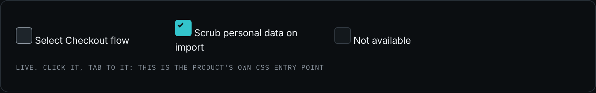
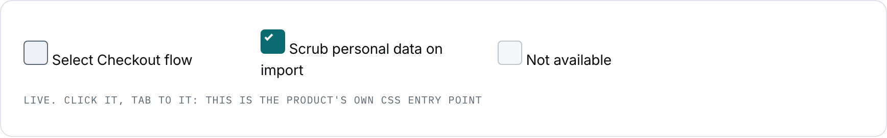
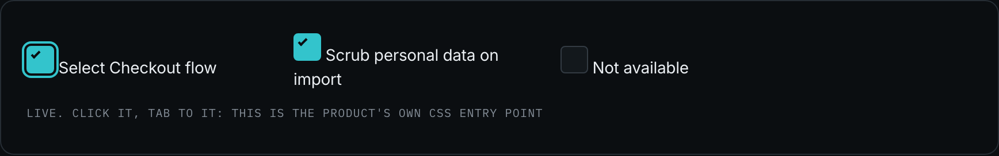
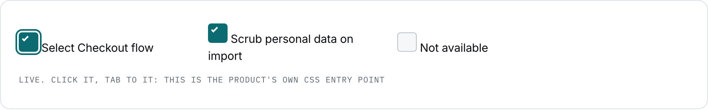

Live. Click it, tab to it: this is the product's own CSS entry point
Variants and states
Twenty-four pixels, and that number is a named exception rather than an oversight: a 44px checkbox would
double the height of every row in a ranked list, and the ranked list is the screen this product exists for. The only axis is
the state of the box, unchecked or checked, so the columns are those two and the rows are the states
checkbox.css paints: rest, hover, focus-visible, disabled. Checked is the real
checked attribute. Active is not shown: the CSS has no pressed rule. Hover on a checked box
shows no change, because the checked rule sets the same border colour and comes after it.
| State | Unchecked .check | Checked .check[checked] |
|---|---|---|
| Rest | ||
| Hover | ||
| Focus | ||
| Disabled |
Properties
| Property | Type | Values | Default |
|---|---|---|---|
| Checked | attribute | unchecked 7 · checked 4, the real checked attribute | unchecked |
| Size | not an axis | 24px, --size-check. There is no size, no emphasis and no content variant | 24px |
| Label | slot | a wrapping <label>; on 7.2 the whole row is the label | required |
| State | variant | rest · hover · focus-visible · disabled [disabled] | rest |
How to use it
When
Two places, and they are opposite in weight. On 2.0 it selects themes for a brief, where it is the quiet start of the product's main job and the reason the selection bar exists. On 7.2 it carries a compliance promise: PII scrubbing is on by default, and the checkbox is how the product SHOWS that rather than claiming it in a paragraph.
That second use is why the checked state takes the accent. A default that matters is worth seeing from across the screen.
When not
- To offer one of several options: take a radio, which this product does not have. If it ever needs one, it is a new component with its own page, not a checkbox with a round corner.
- To switch something on immediately: take a toggle, which this product does not have. A checkbox is part of a form and commits with the form. On 7.2 the settings are saved by a button, which is why a checkbox is right there.
To select a row in a list where 44px is available: the same checkbox. The exception is the row height, not the taste. Where the row can afford 44, use 44.
Where it stands
2.0 Synthesis and 7.2 Data and privacy. 11 occurrences. The ones already in colour:
Anatomy
| Zone | Class or element | Rule |
|---|---|---|
| the box | .check | 24px, the AA floor for this control. One of three named exceptions to the 44px rule, all listed in wireframes/docs/conventions.md |
| the mark | .check:checked::after | Drawn from --text-on-action, the role that exists so a theme cannot lighten the page and the mark together |
| the label | a wrapping <label> | On 7.2 the WHOLE ROW is the label, which is correct and is why the row has no separate hit target |
Axes, with the rule that chooses
| Axis | Values | The rule that chooses |
|---|---|---|
| state | unchecked 7 · checked 4 | The only axis. There is no size, no emphasis and no content variant |
| no other axis | A checkbox that came in two sizes would be two answers to one question. Where a denser control was needed, the answer was a chip, not a smaller box |
States
| State | Token | What moves |
|---|---|---|
| hover | --line-hover | The border brightens |
| checked | --bg-action plus --text-on-action | The one place besides the primary action where the accent becomes a fill |
| focus-visible | --line-focus | The product ring, offset 2px so it clears the 24px box |
| disabled | --opacity-disabled | Dimmed, never repainted |
Tokens it reads
| Reads | Grows from | For |
|---|---|---|
--bg-raised | --grey-850, plate B pixel | the unchecked ground, a step above the row |
--bg-action | --cyan-400 | the checked fill |
--text-on-action | --grey-950 dark, --grey-000 light | the mark itself |
--line-control | --grey-600 | the box boundary |
The CSS also reads --line-hover, --size-check, --radius-sm, --opacity-disabled and --ease.
Snapshots, taken with a real pointer
The states, both themes, snapshots. The matrix on Overview is derived by _states.js; these are the same states reached by a real mouse and a real Tab key. Four snapshots. Checked and disabled are visible in the live row at rest, so photographing them again would be an occurrence rather than a difference.
Re-take: node scripts/shoot-states.js checkbox




Copy this
<input class="check" type="checkbox"> <label class="acct-row"><input class="check" type="checkbox" checked> ... </label>
File: design/system/components/checkbox.css. Stands on: 2.0 Synthesis, 7.2 Data and privacy, 3.2 Import a CSV
Changes, newest first
| Date | What changed | Record |
|---|---|---|
| 2026-11-20 | The page moved to the card format: Overview, Technical, History. The states became a live matrix, unchecked against checked, drawn from the product's own rules; the snapshots moved to Technical as the measurement beside it | docs/decisions.md, "The showcase is read by purpose" |
| 2026-08-19 | Split out of the flat kit into components/checkbox.css, with a page of its own at Step 5 | commit 2353608 |
| 2026-08-18 | The component grew out of the colour layer into the flat kit, kit.css | commit d461e12, docs/decisions.md, "The kit grew out of the colour layer" |